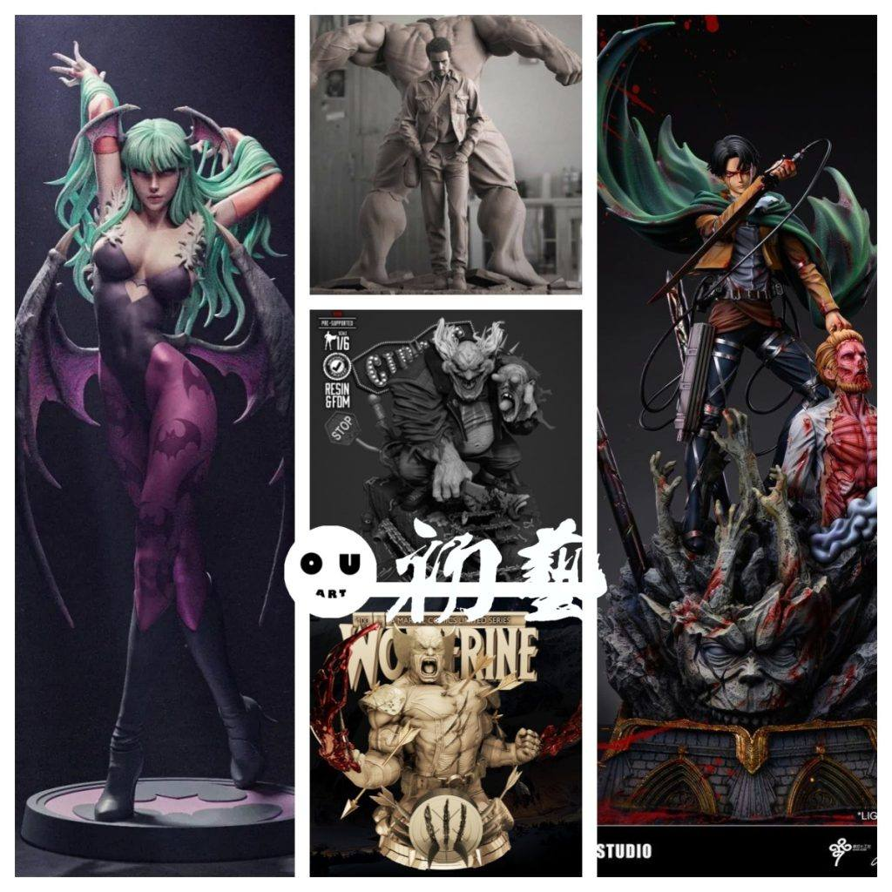
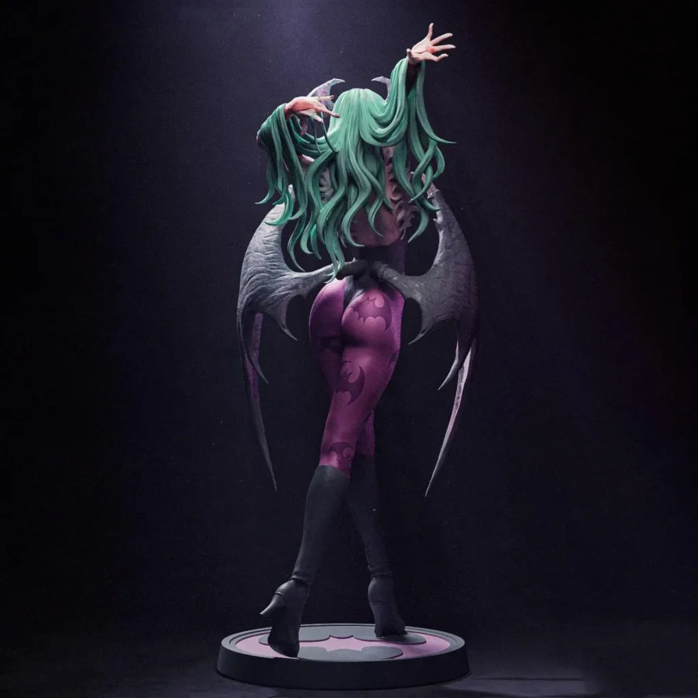
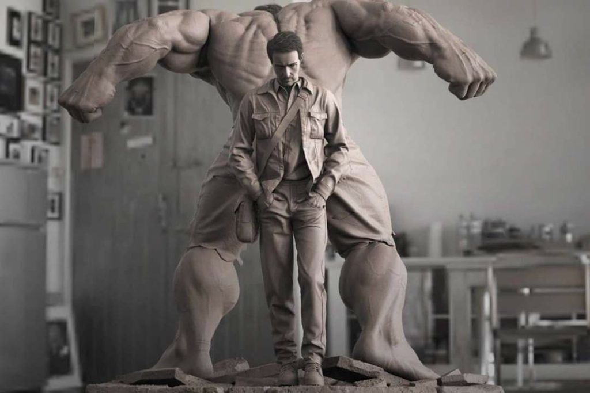
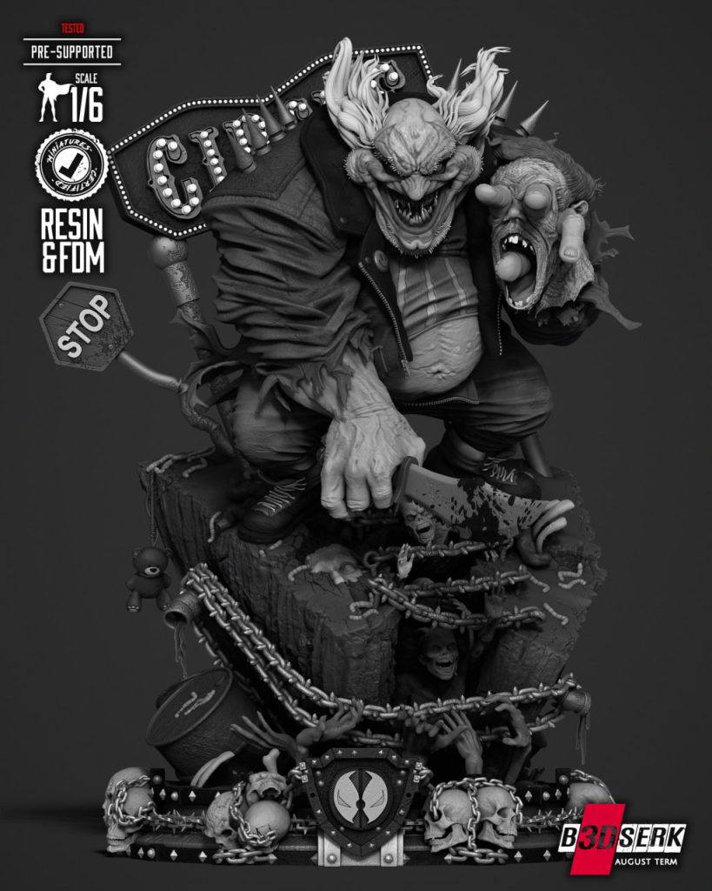
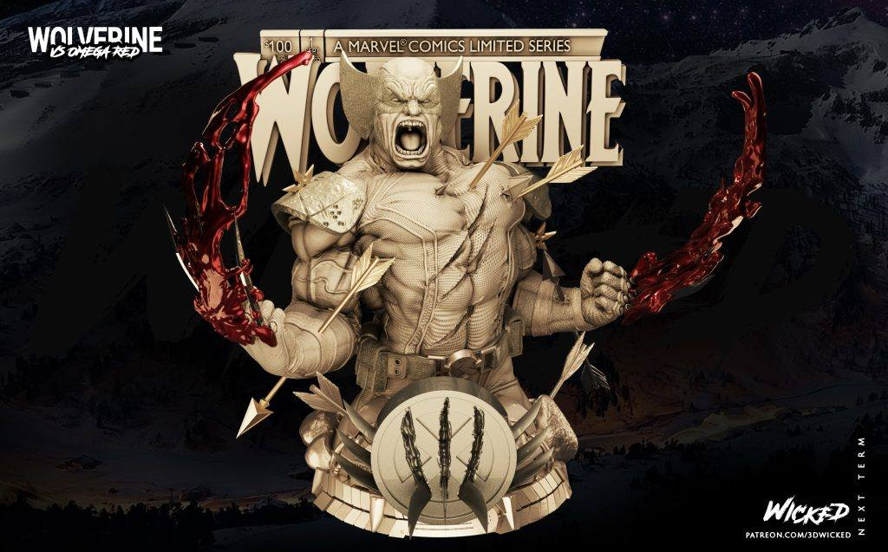
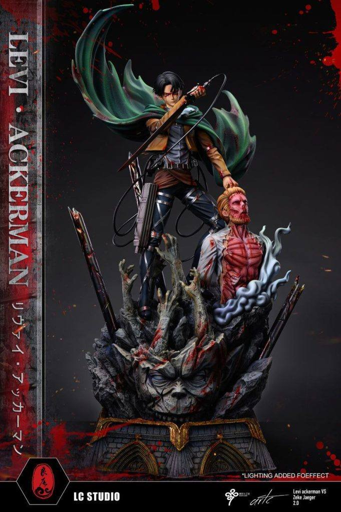
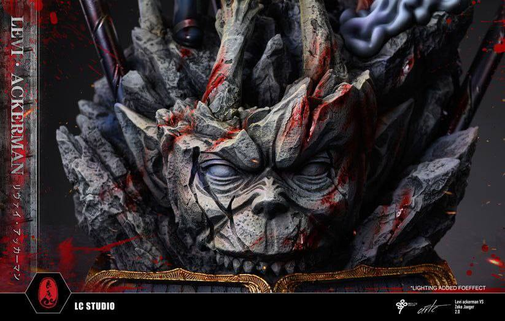
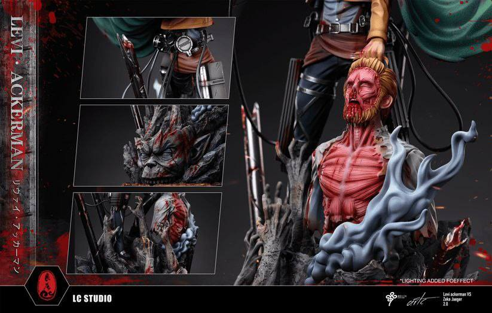

模型分享
10月27日STl图纸文件分享

1.莫妮卡，这个应该更新再街霸专区，比较喜欢这个造型，放在每天更新的帖子里让更多朋友看到吧。
链接：https://pan.baidu.com/s/1Op0GzV6lYrFxASsTbx0NUA
提取码：24wa




2.浩克和班纳，雕像小摆件，造型设计的很特别，有艺术感。
链接：https://pan.baidu.com/s/1hrtnkrh5ijiR1R4B5UxAHw
提取码：itdd

3.再生侠——三角魔小丑，造型细节都很可以的一个图纸。
链接：https://pan.baidu.com/s/1Jrn-l-JBJKAYYhvPxsf-Tw
提取码：ebfm

4.金刚狼胸像，血迹特效有特点，很帅。Wicked出品。
链接：https://pan.baidu.com/s/1Eaj0zcQcXcTcg8v1bl57yw
提取码：3wu1

5.进击的巨人——利威尔·阿克曼，场景细节分件都不错，LC工作室出品。
链接：https://pan.baidu.com/s/1x0P0yn8t5LRhINHsAoBDAw
提取码：ukly



以上内容仅供个人使用（非商用）
ONLY for PERSONAL (NON-COMMERCIAL) use.
加群获得更多免费模型！